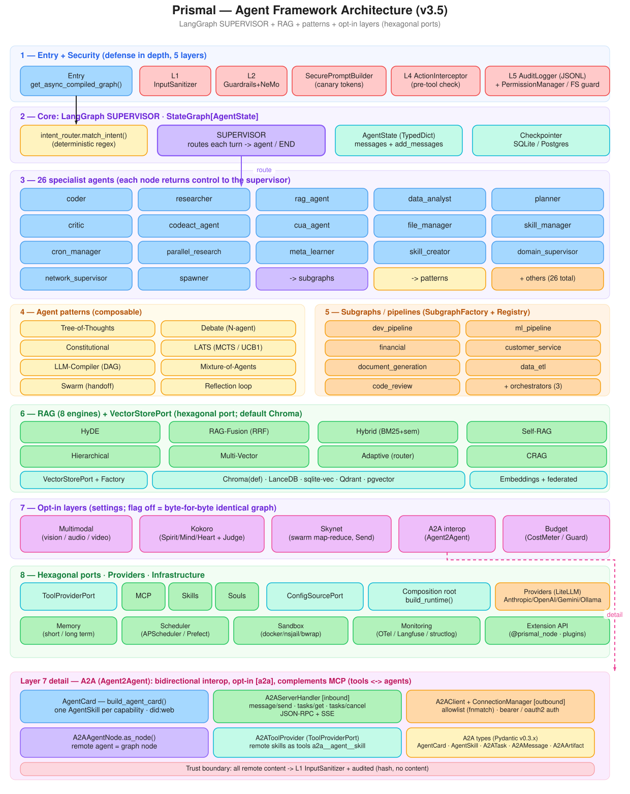

Persian knowledge-base lifecycle, hybrid retrieval (RAM-first, Rust tantivy, GPU), and KB web UI for the Work Credit RAG platform.
Implemented, operational, RAM-first. The retrieval pipeline and Web UI run from kb-manager/. Current release v13_1405-07-06 — 18 docs / 1,123 chunks, full rebuild 2026-10-07 (pgvector HNSW 384d, vectors + HNSW fully in RAM shared_buffers=16GB, Rust tantivy BM25 50 MB RAM, GPU dense/rerank on H200). Previous v11_1405-06-23 — 35 docs / 2,227 chunks, Hit@5 0.9306.
The Knowledgebase component owns source documents, ingestion, indexing, retrieval, reranking, and KB evaluation. It does not own model lifecycle, safety policy, conversation orchestration, or the frontend.
paraphrase-multilingual-MiniLM-L12-v2 (384-d, GPU H200) and cache to .npz.cd components/knowledgebase/kb-manager pip install -e ".[dev]" export KB_DB_MODE=sqlite export KB_SOURCE_DIR=./kb-source python -m kb_manager.cli ingest --full -s "$KB_SOURCE_DIR" python -m kb_manager.cli search -q "اعتبارسنجی چیست" -k 5 python -m kb_manager.cli serveFull technical details →

Prismal — Agent Framework Architecture (v3.5): LangGraph SUPERVISOR + RAG + patterns + opt-in layers (hexagonal ports). Includes entry/security layers, core supervisor, 26 specialist agents, RAG engines (8), opt-in layers (Multimodal, Kokoro, Skynet, A2A interop, Budget), hexagonal ports, and providers.
components/knowledgebase/
├── KB_ARCHITECTURE.md # architecture + processing plan
├── retrieval-evaluation-research.md # IR metrics / frameworks / evaluation
├── SKILL.md # agent configuration
├── prismal_architecture.svg # architecture SVG
├── docs/ # benchmark debug + tabular chunking research
├── archive/ # archived benchmark / implementation notes
└── kb-manager/ # the main package
├── README.md # quick start + current retrieval metrics
├── kb_manager/ # cli, config, parsers, chunker, embedder, pipeline, web, evaluation, ...
├── versions/ # KB snapshots v1, v2, v4_retrieval, v6, v7_iva, v10, v11
├── data/ # kb_*.db, dense_embeddings.npz, plots/
└── pyproject.toml
| Ver | Corpus | Key change | Benchmark (measured) |
|---|---|---|---|
| v11 | 35 docs / 2,227 chunks | chunkfix rebuild, dense use_context=False | Hit@5 0.9306, MRR 0.8281 |
| v13 | 18 docs / 1,123 chunks | 1405-07-06, RAM-first: tantivy RAM BM25, pgvector 16 GB shared_buffers, GPU dense/rerank H200 | latency 55 ms, Hit@5 pending re-benchmark |
| Full per-version history: v1 → v13 in High-Level Detail. | |||
This is the Overview page. Continue to High-Level Detail for feature walkthroughs and pipelines, or In-Depth Technical Detail for parameters, latency, API, CLI, and benchmarks.